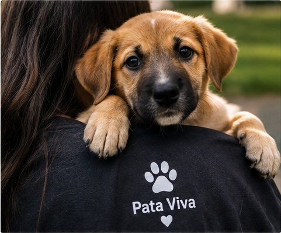
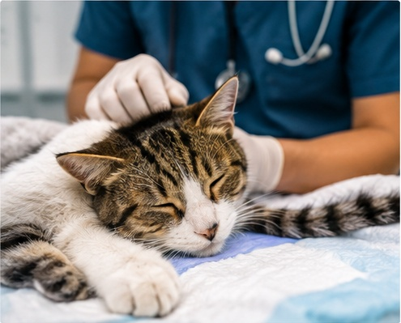
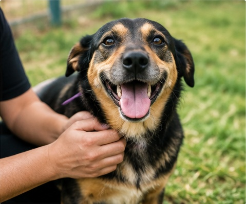
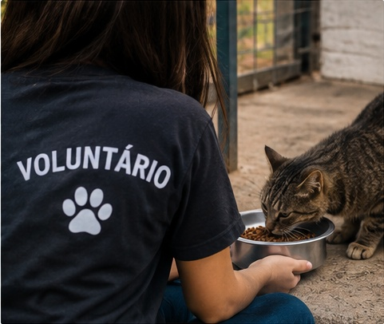
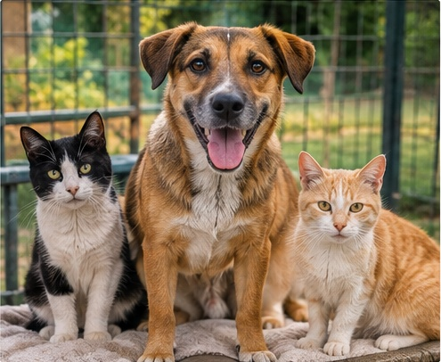
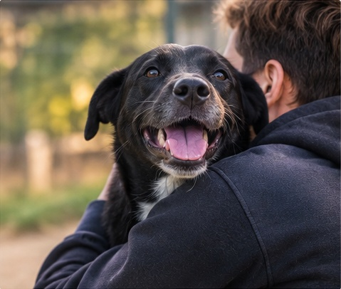

Conheça as principais iniciativas da Pata Viva e descubra como nossas ações ajudam a transformar a vida de animais em situação de vulnerabilidade.
Projetos
Resgate e Acolhimento
Categoria: Resgate
O projeto atua no atendimento de cães e gatos encontrados em situações de abandono ou vulnerabilidade. Após o resgate, os animais recebem cuidados básicos, avaliação das necessidades e um espaço seguro durante o período de recuperação.
Impacto: Oferecer proteção e condições adequadas para que os animais possam se recuperar e seguir para uma nova etapa.
Cuidar para Recomeçar
Categoria: Saúde
A iniciativa busca proporcionar atendimento veterinário aos animais acolhidos, incluindo consultas, vacinação, castração e tratamentos necessários.
Impacto: Garantir melhores condições de saúde e preparar os animais para uma vida mais segura e saudável.
Um Lar para Cada Patinha
Categoria: Adoção
O projeto aproxima animais preparados para adoção de pessoas interessadas em oferecer um lar responsável. A iniciativa também promove a conscientização sobre os compromissos envolvidos na adoção.
Impacto: Criar oportunidades para que animais acolhidos encontrem famílias responsáveis e permanentes.
Rede de Voluntários
Categoria: Voluntariado
Nossa rede reúne pessoas que desejam contribuir com a causa animal. Existem diferentes formas de participação, desde apoio em eventos e campanhas até auxílio na divulgação dos animais disponíveis para adoção.
Impacto: Ampliar a capacidade de atuação da organização por meio da participação da comunidade.
Faça parte da nossa equipe
Você não precisa ser especialista para ajudar. Existem diferentes formas de contribuir com a Pata Viva, de acordo com sua disponibilidade e suas habilidades.
Apoio em eventos
Divulgação de campanhas
Fotografia e produção de conteúdo
Organização de arrecadações
Apoio em feiras de adoção
Auxílio administrativo
Quer fazer parte? Cadastre-se e conte para nós como você gostaria de contribuir.
As doações ajudam a manter nossas ações de resgate, acolhimento e cuidados veterinários. Toda contribuição pode ajudar a garantir alimentação, medicamentos, tratamentos e outros recursos necessários para os animais atendidos.
R$25 — ajuda com alimentação
R$50 — contribui para cuidados básicos
R$100 — ajuda em tratamentos e cuidados veterinários
Outro valor — escolha quanto deseja contribuir
Os valores e dados apresentados nesta página são demonstrativos para fins do projeto acadêmico.
Para onde vai a sua contribuição?
A Pata Viva busca utilizar os recursos recebidos de forma responsável, priorizando alimentação, cuidados veterinários, medicamentos, vacinação, castração e manutenção das atividades de acolhimento.
70% — cuidados e alimentação dos animais
20% — estrutura e acolhimento
10% — campanhas e ações de conscientização
Indicadores apresentados exclusivamente para demonstração da plataforma acadêmica.
Galeria

Resgate de um novo integrante da Pata Viva

Cuidados durante a recuperação

Feira de adoção responsável

Voluntários em ação

Um novo começo

Encontro com a nova família
Toda história pode ter um novo começo.
Seja como voluntário, apoiador ou futuro adotante, você também pode fazer parte dessa transformação.